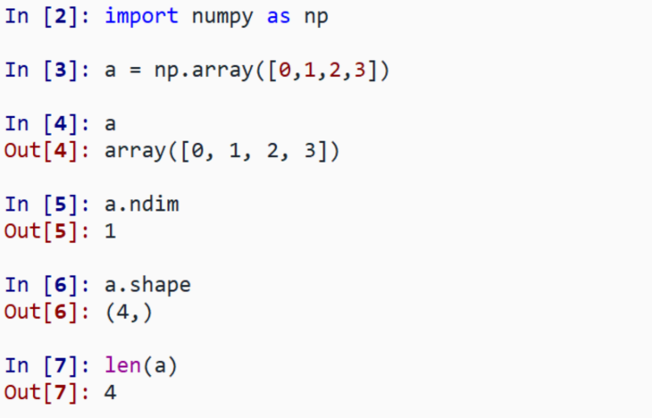
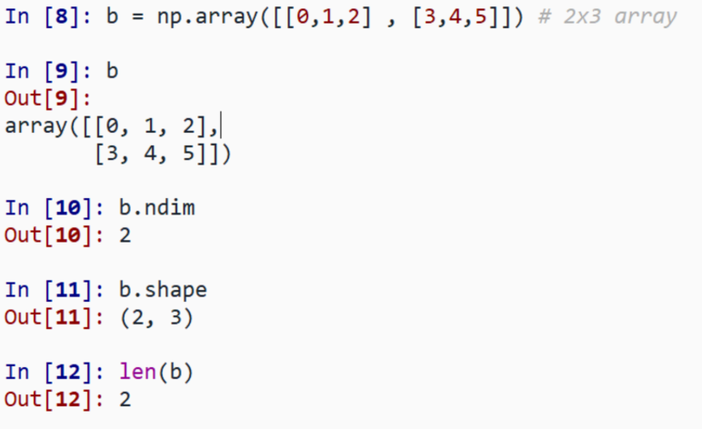
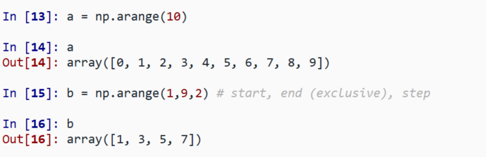
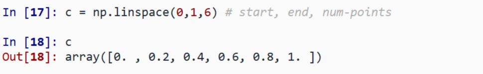
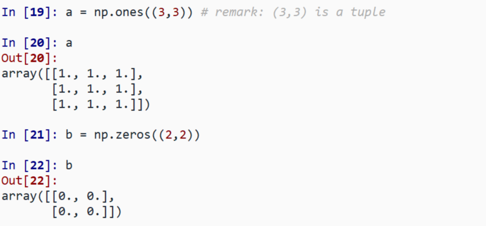
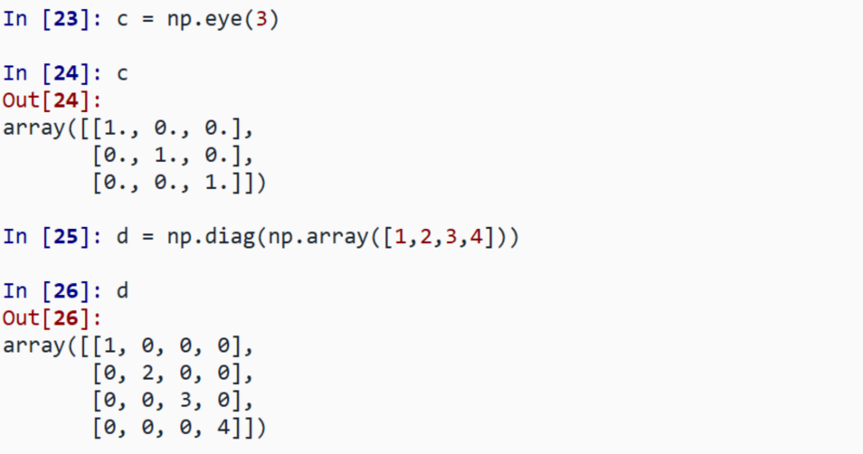
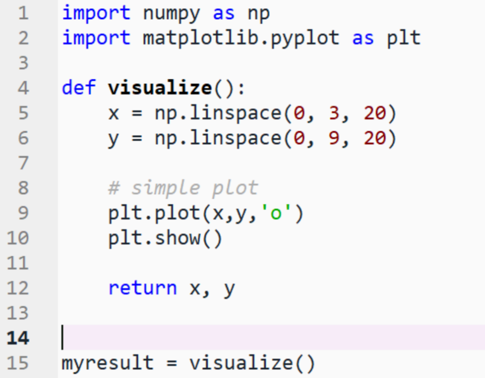
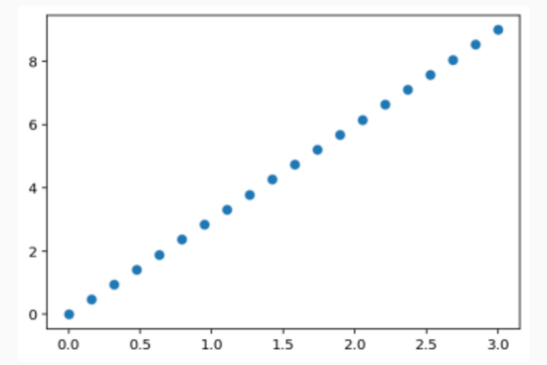

Python lists
my_list = [0,1,2,3]
NumPy arrays
my_numpy_array = np.array([0,1,2,3])
Why NumPy?:
1-D:

2-D:

Exercise: Simple arrays
your own: how about odd numbers counting backwards on the first row, and even numbers on the second?
len(), np.shape() on these arrays. How do they relate to each other?And to the ndim attribute of the arrays?
In practice, we rarely enter items one by one.
arange:

linspace:

ones & zeros:

eye & diag:

Exercise: Creating arrays using functions
Experiment with arange, linspace, ones, zeros, eye and diag.
Let's create a function called visualize which will use two arrays x and y to create a basic plot:


Exercise: Simple visualizations
Plot some simple arrays: a cosine as a function.